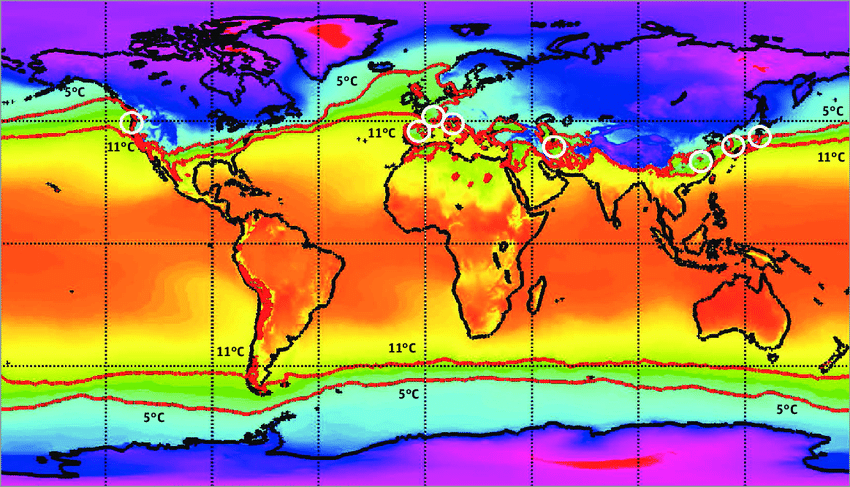

At Spectral Sciences, Inc. (SSI), my work focused on improving their Standardized Atmospheric Generator (SAG). This tool synthesizes various datasets and sources into a cohesive estimation of atmospheric conditions and composition at various altitudes.
Much of my early work consisted of locating and figuring out how to extract data from antiquated and non-standard datasets. This often featured reading obscure documentation and extensive trial-and-error to figure out how to properly read the data. While this can sometimes be frustrating, I have seldom been so excited as when I finally figured out how to read an especially challenging dataset from 1979.
The next stage of tasks focused on building and standardizing a suite of tools to extract the datasets that were the focus of the first part of my work. I designed and built these data classes with the goal of maximizing ease of use while still providing all data included in the dataset. Iterative improvement was conducted from user feedback.
The final set of tasks that I worked on at SSI incorporated the new datasets, using the new data classes, with SSI's SAG. Here, the effort to create easy-to-use single responsibility data classes was rewarded. Additionally, I implemented a custom n-dimensional interpolator to facilitate combination of relevant datasets.
My experience at SSI taught me the importance of software design principles when creating user-focused software. Additionally, my atmospheric composition domain knowledge grew drastically. This reinforced my belief that an understanding of the relevant domain is just as essential as technical knowledge.